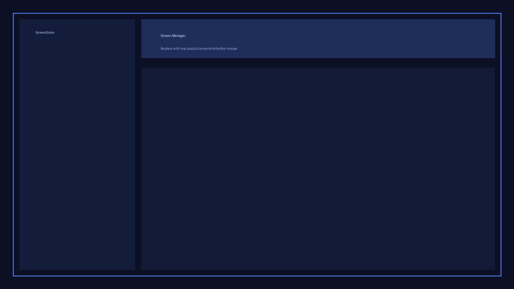

Professional Product Documentation
PicxelCast - Complete Documentation
This guide covers installation, production configuration, SaaS isolation, day-to-day operations,
and support policy. It is written for technical and non-technical buyers with clear, step-by-step instructions.
Important: Keep this documentation publicly accessible and updated for every release.
Envato reviewers check structure, clarity, and changelog quality.
Dockerized by default: PicxelCast ships with docker-compose.yml and docker-compose.dev.yml.
For most buyers, Docker installation is the fastest and easiest path.
Quick navigation: You can return to the product landing page anytime via
Landing Page .
1) Introduction
PicxelCast is a digital signage platform for managing screens, scheduling content, and operating
multi-tenant SaaS instances from a centralized admin panel.
Documentation Package Structure
documentation/
|- index.html
|- assets/
| |- style.css
| |- screenshots/
| |- dashboard.png
| |- screen-manager.png
| |- scheduler.png
| |- template-builder.png
| |- saas-admin.png
|- changelog.html
Frontend (Nginx + Vue)
->
Backend (Django + Gunicorn)
->
PostgreSQL
+
Redis
2) Requirements
Server Requirements
Python 3.10+
Django 4.x or 5.x
Node.js 18+ (for frontend build)
PostgreSQL 13+ or MySQL 8+
Redis 6+ (scheduler and websocket services)
Docker Engine 24+ and Docker Compose plugin
Nginx or Apache
SSL Certificate (required for SaaS production)
Runtime Notes
All Python dependencies are in requirements.txt.
Build frontend once per deployment with npm run build.
Use UTC timezone on the server for accurate scheduling.
Use a non-root database user with limited privileges.
Browser Support
Chrome 90+, Firefox 88+, Safari 14+, Edge 90+
3) Installation Guide
Recommended path is Dockerized installation. Manual path is kept for advanced server setups.
Quick Docker Install (Recommended)
1
Prepare env: cp .env.example .env
2
Configure secrets: set DB_PASSWORD and SECRET_KEY
3
Run installer: chmod +x install.sh && ./install.sh
4
Open app: http://your-server-or-domain/ then complete /install
docker compose build --no-cache
docker compose up -d
docker compose ps
What runs in Docker: frontend, backend, db, and redis services.
Manual steps (non-Docker) are below for advanced users.
Step 1: Upload files to your server
Upload the full package via cPanel File Manager, FTP, or SSH.
Step 2: Create database
Create a database and user (phpMyAdmin or command line) with full access to that database only.
Step 3: Configure .env
Copy from template and set database, host, Redis, and mail values.
Step 4: Run migrations
python manage.py migrate
Step 5: Build Vue.js frontend
npm install
npm run build
Step 6: Configure web server
Use an Nginx or Apache virtual host with HTTPS enabled.
Step 7: Open installation wizard
https://yourdomain.com/install
Step 8: Create administrator account
Create your first admin user and sign in to dashboard.
Installation complete: Verify dashboard, API health endpoint, and scheduler service status.
frontend Serves UI on port 80 by default
backend Runs migrations and API automatically
db PostgreSQL persistent volume
redis Queue, cache, and realtime broker
4) Configuration (.env)
Each variable should be reviewed before production launch.
# Database
DB_HOST=db # Docker database service host
DB_NAME=pixelcast_signage_db
DB_USER=pixelcast_signage_user
DB_PASSWORD=safpewri234aca
DB_PORT=5432 # Database port
# Security
SECRET_KEY=replace-me # Never rotate casually after install
DEBUG=False # Must be False in production
ALLOWED_HOSTS=domain.com,localhost,127.0.0.1
CSRF_TRUSTED_ORIGINS=https://domain.com
# Redis
REDIS_HOST=redis
REDIS_PORT=6379
CELERY_BROKER_URL=redis://redis:6379/0
CELERY_RESULT_BACKEND=redis://redis:6379/0
# Email
MAIL_HOST=smtp.gmail.com
MAIL_PORT=587
MAIL_USER=example@domain.com
MAIL_PASS=app-password
MAIL_USE_TLS=True
DB_HOST=db (docker default)
USE_REDIS_CACHE=True
DEBUG=False in production
Set FRONTEND_HOST_PORT in .env if needed (docker-compose dev)
Security note: Do not commit .env to source control.
Rotate credentials if you suspect exposure.
5) Multi-Tenant / SaaS Setup
Create tenant from SaaS Admin panel.
Assign plan, seat limits, and billing cycle.
Keep tenant data isolated by tenant id and scoped queries.
Optionally configure custom domain for each tenant.
Validate tenant-level permissions using test users.
Architecture Summary
Client Domain -> Nginx -> Django App -> Tenant Resolver
|-> PostgreSQL (tenant-scoped data)
|-> Redis (queue/cache/realtime)
|-> Worker/Scheduler services
SaaS administration panel (tenant and plan management)
6) Admin Dashboard Guide
Use the dashboard for tenant overview, active screens, failed jobs, and system alerts.
Main dashboard with KPI cards and recent activity
7) Screen Management
Register device via pairing code or activation token.
Group screens by location, tenant, and tags.
Assign fallback content to avoid blank screens.
Monitor online/offline heartbeat in real time.

Screen manager with status, grouping, and assignment tools
8) Content Scheduler
Create one-time or recurring schedules.
Set timezone-aware windows for campaigns.
Configure priority for overlap scenarios.
Use preview mode before publishing live.
Scheduler timeline with campaign windows and priority levels
9) Template Builder
Create canvas profiles (1080p, 4K, portrait).
Add layers and widgets (text, image, video, clock, web, ticker).
Save reusable blocks for fast iteration.
Publish templates to one or many screens.
Drag-and-drop template builder with layer and widget controls
10) Error Handling & Logs
Where to check logs
Application logs: Django and worker processes
Web logs: Nginx/Apache access and error logs
Scheduler logs: queued, running, failed jobs
Common fixes
500 error: check DEBUG=False and missing env values.Static assets missing: run build and collect static files again.WebSocket disconnected: verify Redis service and firewall rules.
11) API Reference
Core API groups from codebase routing:
/api/setup/status
/api/setup/db-check
/api/health
/api/docs
/api/schema
/api/logs/...
/api/core/...
/iot/... (device communication)
Setup Wizard: /install + /api/setup/*
Health Probe: /api/health
Docs UI: /api/docs
Device Channel: /iot/*
Authentication is enforced by backend APIs; frontend route checks are UX-level and not security boundaries.
12) Update Guide
Create a full backup (database + media + env).
Replace application files with new version.
Install new dependencies if required, or rebuild Docker images.
Run migrations: python manage.py migrate (or via backend container start).
Rebuild frontend: npm install && npm run build (manual) or docker compose build.
Restart app services: docker compose up -d.
Review changelog for breaking changes.
13) FAQ
Can I use one license for multiple production domains?
No. Follow the marketplace licensing policy per production domain/project.
Does PicxelCast support multi-tenant SaaS?
Yes. Tenant isolation, plan management, and tenant-specific administration are supported.
Can you provide custom features?
Custom work is possible as a separate paid service and is not included in item support.
14) Support
Email: support@picxelcast.app
Envato Comments: Item comments page
Response time: 24-48 business hours
Included: bug fixes, setup guidance, documented feature clarification
Not included: customization, third-party integration coding, server management contracts
15) Changelog
Version 1.0.0 - March 2026
Initial release
Multi-screen management
Content scheduler
SaaS / Multi-tenant support
Template builder
Error handling system
Full release history: Open changelog.html